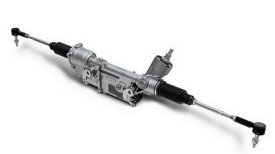

CТО
CТО
Капелла
ВНИМАНИЕ! Мы переехали!!!
Наш новый адрес:
ЧЕСТНЫЙ ремонт автомобилей в Минске в рассрочку.
Замена и ремонт рулевой рейки со снятием и установкой без посредников, замена масла ГУР, ремонт и замена насоса гидроусилителя руля, замена пыльников, рулевых тяг, рулевых наконечников и многое другое на нашей СТО в Минске.
Официальная гарантия на все работы.
ВЫ ПЛАТИТЕ ТОЛЬКО ЗА РЕЗУЛЬТАТ!
Звоните ежедневно
с 9 до 20 часов!
 +375 (33) 600 23 47
+375 (33) 600 23 47
 +375 (29) 627 49 07
+375 (29) 627 49 07
или напишите свой вопрос на Viber
 +375 29 627 49 07
+375 29 627 49 07
 РАССРОЧКА на 6 месяцев!!!
РАССРОЧКА на 6 месяцев!!!
Ремонт авто сегодня, оплата потом!
Оцените нас:
Ремонт рулевых реек в Минске выполняют множество СТО, но большинство из них на самом деле занимается снятием и установкой рулевых реек, а непосредственно сам ремонт рейки выполняют отдельные специализирующиеся на ремонте рулевых реек мастерские и частные мастера, что естественно прибавляет ряд нюансов для клиента. Главное - это увеличение стоимости ремонта (снятие/установка + ремонт + накрутка на ремонт) и отсутствие прямой гарантии на ремонт рейки, так как гарантию дает непосредственно исполнитель ремонта, а СТО гарантирует только за снятие/установку. Вот тут и возникают сложности при возникновении гарантийного случая: порядочной СТО конечно придется бесплатно снять рейку, отдать ее по гарантии исполнителю и затем установить рейку на автомобиль, но некоторые СТО не станут бесплатно снимать и затем устанавливать рейку, а отправят клиента напрямую к исполнителю, который занимается ремонтом уже снятых рулевых реек и клиенту придется искать самому того, кто снимет и поставит после ремонта рейку на авто. Проблема заключается еще и в том, что не всякая СТО согласится снять рейку, а затем, в лучшем случае, день ждать пока клиент отремонтирует где-то рейку и привезет ее для установки на авто. Без рейки машину не выкатишь, а место останется занятым почти на весь день. Как итог, простой войдет в конечную стоимость для клиента. Поэтому наше преимущество заключается в том, что Все работы по замене и ремонту рулевых реек мы проводим самостоятельно и без посредников!!! Мы даем клиенту свою прямую гарантию на ремонт рулевой рейки!!! При возникновении гарантийного случая мы самостоятельно и бесплатно снимаем и устанавливаем рейку обратно на автомобиль!
Бесплатная диагностика рейки! Рассрочка оплаты на 6 месяцев по картам рассрочки "Карта покупок", "Карта FUN", "Smart Карта" и "МАГНИТ"!
 Рулевое управление современных автомобилей в большинстве своем представляет собой совокупность следующих систем:
Рулевое управление современных автомобилей в большинстве своем представляет собой совокупность следующих систем:
- рулевая колонка;
- рулевой механизм;
- рулевой привод.
В настояещее время существует три вида рулевых механизмов реечного типа: с механической рулевой рейкой, с гидравлической рейкой и с электрической рейкой.
Механическая рулевая рейка - cамый простой вариант рулевого механизма. Поворот колес в таком типе механизма осуществляется за счет физической силы водителя при вращении рулевого колеса автомобиля.
Гидравлическая рулевая рейка - самый распространенный тип рулевого механизма в современных автомобилях. Поворот колес в таком механизме осуществляется за счет усиления гидроусилителем вращения руля водителем. Данный тип механизма обеспечивает более комфортное управление автомобилем по сравнению механическим типом рулевой рейки.
Электрическая рулевая рейка - по своему принципу действия аналогична гидравлической рейке, только усиление производится за счет электромотора.
Рулевая рейка является одним из важнейших узлов Вашего авто и пренебрежение к ее состоянию чревато серьезными последствиями. Поломка рулевой рейки может стать причиной серьезной аварии в следствие потери управления автомобилем на дороге. К счастью, поломка рулевой рейки не происходит вдруг и сразу. О необходимости обратить внимание и произвести ремонт рулевой рейки или ее замену говорит ряд признаков. Неисправность рулевой рейки - достаточно частая вещь. Обычно она выражается в подтекании рейки в районе пыльников, что свидетельствует об износе сальников рейки. При каждой появившейся возможности заглянуть под днище своего авто обязательно обратите внимание на состояние пыльников рулевой рейки. Обследуйте их на предмет трещин и разрывов. Длительное движение с порванными пыльниками губительно для рулевой рейки, так как в механизм рейки попадает пыль и грязь разрушающая сальники. Давление, создаваемое жидкостью гидроусилителя, падает за счет её утечки и рулевая рейка не справляется с возложенной на нее функцией. При этом нагрузка на сам механизм рейки сильно возрастает, что может привести к его поломке. Порванные пыльники рулевой рейки следует менять как можно скорее дабы избежать дорогостоящего ремонта этого механизма. Если Вы обнаружили, что рулевая рейка Вашего автомобиля подтекает, руль "закусывает" или "хрустит", то необходимо срочно провести диагностику рулевой системы и в частности рулевой рейки Вашего авто. Если Вы заметили, например, стуки или увеличение люфта руля, то такие неисправности могут свидетельствовать о том, что в механизме рулевого управления ослабло крепление картера, кронштейна маятникового рычага или рулевой сошки. Также это может быть признаком того, что пришли в негодность шарниры рулевых тяг, передающая пара или втулка маятникового рычага. Если при вращении руля Вы ощущаете повышенное сопротивление, то возможно нарушилось соотношение углов установки передних колес или же зацепление передающей пары. Также руль может туго вращаться при отсутствии смазки в картере или неисправности насоса усилителя руля. Не забывайте периодически проверять качество и уровень жидкости в бачке гидроусилителя.
Как видите, причины неисправности могут быть различными и их достаточно много. Поэтому, если Вы обнаружили в управлении своего автомобиля похожие или другие симптомы, не торопитесь делать самостоятельные выводы, они могут оказаться ошибочными и Вы понесете напрасные и не малые расходы на ремонт не тех узлов и деталей, не говоря уже о затраченном впустую времени. Лучше обратитесь к нам на СТО в Минске для проведения диагностики рулевой рейки и всей рулевой системы. Сэкономьте свое ВРЕМЯ и ДЕНЬГИ!
На нашей СТО в Минске осуществляются следующие услуги по ремонту рулевого управления:
- замена рулевых тяг;
- замена ГУР (гидроусилителя руля);
- ремонт некоторых видов ГУР;
- замена жидкости ГУР;
- снятие / установка (замена) и ремонт рулевой рейки;
- диагностика рулевой рейки;
- замена пыльников рулевой рейки;
- снятие / установка и ремонт рулевой колонки
Цена снятия и установки (замена) рулевой рейки на авто составляет 120 руб.
Цена ремонта рулевой рейки с учетом запасных частей - 200-250 руб.
Стоимость ремонта рулевой рейки в комплексе со снятием и установкой на нашей СТО в Минске обычно составляет 300-350 рублей, в зависимости от типа рулевой рейки и вида её неисправности. В эту стоимость входит:
- снятие и установка рулевой рейки на авто до и после ее ремонта;
- ремонт рулевой рейки с учетом запчастей (разборка рейки, чистка, замена сальников, ремонт или замена поврежденных частей, сборка рейки);
- масло ГУР
и, при необходимости, замену пыльников рулевой рейки.
Если Вы решили произвести ремонт рулевой рейки в другом месте и Вас интересует только снятие + последующая ее установка, то данная работа обойдется Вам в 120 рублей + 30 рублей за каждый день нахождения автомобиля на СТО в ожидании готовой рулевой рейки.
В дополнение ко всему, мы проведем БЕСПЛАТНУЮ ДИАГНОСТИКУ ПОДВЕСКИ И ХОДОВОЙ ЧАСТИ Вашего авто!
На все услуги по ремонту автомобилей на нашей СТО в Минске действует рассрочка оплаты на 6 месяцев! Если у Вас нет карты рассрочки, обязательно заведите себе её! Вы можете оформить карту рассрочки в течение нескольких дней и пользоваться услугами рассрочки во множестве торговых точек Минска и всей страны и, конечно, у нас на СТО. Заказать карту рассрочки "КАРТА ПОКУПОК" Вы можете здесь, а карту "МАГНИТ" здесь. Оплата картой рассрочки позволяет Вам разделить сумму расходов за ремонт и запасные части, использованные при ремонте, на 6 месяцев. Это действительно ВЫГОДНО! Такая рассрочка превращает любой дорогостоящий ремонт автомобиля в доступный почти каждому автовладельцу.
Вы получите от нас ОФИЦИАЛЬНУЮ ГАРАНТИЮ на выполненный ремонт рулевой рейки.
Более точную информацию о цене на ремонт рулевой рейки на нашей СТО в Минске, а также цены на другие услуги по ремонту авто, Вы сможете узнать, задав свой вопрос мастеру на  +375 (29) 627-49-07 или оставив свой номер телефона в поле внизу, и, как только мастер освободится, он перезвонит Вам, ответит на все Ваши вопросы и запишет на диагностику или ремонт Вашего авто в удобное для Вас время.
+375 (29) 627-49-07 или оставив свой номер телефона в поле внизу, и, как только мастер освободится, он перезвонит Вам, ответит на все Ваши вопросы и запишет на диагностику или ремонт Вашего авто в удобное для Вас время.
Вы можете оплатить ремонт рулевой рейки в РАССРОЧКУ. С условиями оплаты ремонта рулевой рейки в рассрочку Вы можете ознакомиться на главной странице нашего сайта.
Отправка запроса Вас ни к чему не обязывает. Спрашивайте, мы рады будем Вам ответить!
Заполните поля (модель автомобиля или VIN-номер, способ получения ответа, описание требуемого ремонта) и отправьте запрос.
Ответ с ценой интересующего Вас ремонта и условиями Вы получите через 30-60 минут указанным Вами способом.
Если произошла задержка с получением ответа, то не судите строго, клиентов много и от их количества зависит насколько быстро мастер обработает Ваш запрос.
Мы гарантируем, что введенная Вами информация не попадет в руки третьих лиц. Мы не используем Ваши контакты для рассылок и гарантируем конфиденциальность введенной Вами информации.
Остались вопросы по ремонту автомобиля или работе СТО?
Задайте их по телефонам  +375 (33) 600 23 47 или
+375 (33) 600 23 47 или  +375 (29) 627 49 07 или отправьте свой вопрос мастеру на
+375 (29) 627 49 07 или отправьте свой вопрос мастеру на +375 29 627 49 07
+375 29 627 49 07
* сроки гарантии на выполненные работы регулируются п.107 Главы 15 "Правил бытового обслуживания потребителей"
минск.мой-автосервис.бел © 2016-2020 ООО "КапеллаПлюс" УНП 191187089